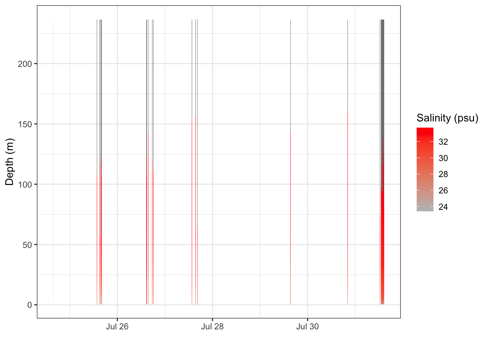
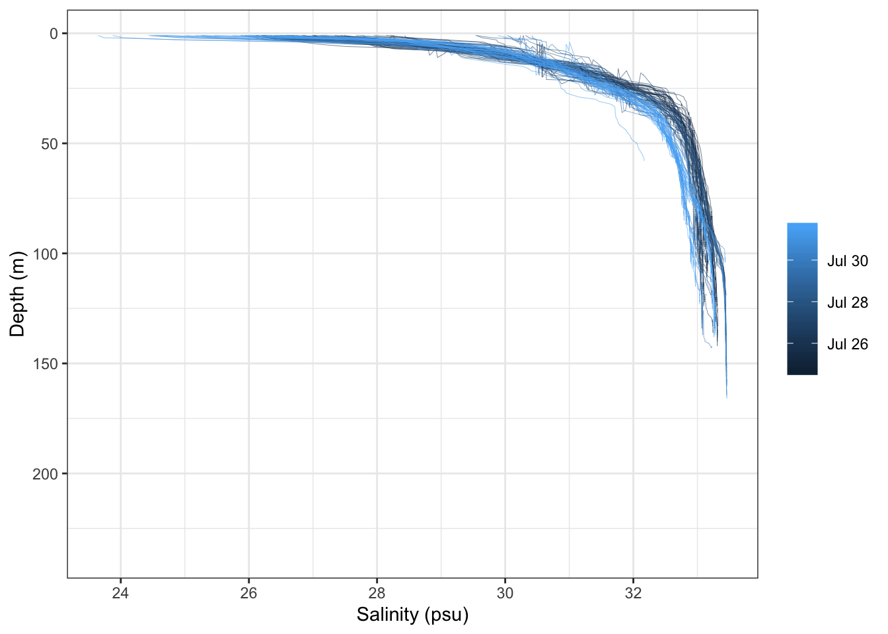

21 Additional Resources: Using NetCDF files
21.1 Learning Objectives
In this lesson, you will:
- Learn to read data from a NetCDF file
- Wrangle the example data into a data frame
- Make some plots
21.2 Introduction
NetCDF files are hierarchical data files that contain embedded metadata and allow for efficient extraction of data. They are particularly useful for storing large data, such as raster data and model outputs.
This lesson draws from a previous lesson written by Leah Wasser, available here.
This R blog post also contains some good introduction material.
21.3 Reading in data
First let’s load the ncdf4 package
Let’s grab an example file. Download the .nc file from Fiamma Straneo. 2019. Temperature and salinity profiles adjacent to a tidewater glacier in Sarqardleq Fjord, West Greenland, collected during July 2013. Arctic Data Center. doi:10.18739/A2B853H78. http://doi.org/10.18739/A2B853H78
First we open a connection to our NetCDF file using nc_open.
You can print information about what is contained in the file using the print function on the nc object.
## File data/WG2013CTD.nc (NC_FORMAT_NETCDF4_CLASSIC):
##
## 7 variables (excluding dimension variables):
## double time[profile]
## standard_name: time
## long_name: Time
## units: days since 1970-01-01 00:00:00
## calendar: gregorian
## axis: T
## double lat[profile]
## long_name: latitude in decimal degrees north
## standard_name: latitude
## units: degrees_north
## axis: Y
## double lon[profile]
## long_name: longitude in decimal degrees east
## standard_name: longitude
## units: degrees_east
## axis: X
## double sal[profile,z]
## long_name: Salinity
## standard_name: sea_water_salinity
## units: PSU
## axis: Z
## ncei_name: Salinity
## scale_factor: 1
## add_offset: 0
## data_min: 23.6509951724887
## data_max: 33.4591356324903
## _FillValue: -99999
## coordinates: time lat lon z
## double sal_qc[profile,z]
## standard_name: sea_water_salinity status_flag
## long_name: Salinity QC Flag
## flag_values: 0
## flag_values: 1
## flag_values: 2
## flag_values: 9
## flag_meanings: no_known_bad_data known_bad_data suspicious_data missing_data
## _FillValue: -99999
## data_min: 0
## data_max: 0
## valid_range: 0
## valid_range: 9
## coordinates: time lat lon z
## double temp[profile,z]
## long_name: Temperature
## standard_name: sea_water_temperature
## units: degree_Celsius
## ncei_name: Temperature
## scale_factor: 1
## add_offset: 0
## data_min: 0.48266228506688
## data_max: 9.10330980430869
## _FillValue: -99999
## coordinates: time lat lon z
## double temp_qc[profile,z]
## standard_name: sea_water_temperature status_flag
## long_name: Temperature QC Flag
## flag_values: 0
## flag_values: 1
## flag_values: 2
## flag_values: 9
## flag_meanings: no_known_bad_data known_bad_data suspicious_data missing_data
## _FillValue: -99999
## data_min: 0
## data_max: 0
## valid_range: 0
## valid_range: 9
## coordinates: time lat lon z
##
## 2 dimensions:
## z Size:236
## long_name: depth of sensor
## standard_name: depth
## units: m
## axis: Z
## positive: down
## profile Size:92
## standard_name: profile_number
##
## 36 global attributes:
## time_coverage_start: 0043-07-23T15:45:48Z
## time_coverage_end: 0043-07-30T14:36:07Z
## geospatial_lat_min: 68.8977833333333
## geospatial_lat_max: 69.0036333333333
## geospatial_lat_units: degrees_north
## geospatial_lon_min: -50.5410166666667
## geospatial_lon_max: -50.2785
## geospatial_lon_units: degrees_east
## geospatial_vertical_min: 1
## geospatial_vertical_max: 236
## geospatial_vertical_positive: down
## geospatial_vertical_units: m
## geospatial_vertical_resolution: 1 meters
## date_created: 2018-10-03T00:00:00Z
## date_modified: 2018-10-03T00:00:00Z
## date_issued: 2018-10-03T00:00:00Z
## history: Processed by Jamie Holte, Scripps Institution of Oceanography, October 2018
## contributor_name: Fiamma Straneo, Jamie Holte
## contributor_role: Principal Investigator, Data Processor
## creator_url: http://www.whoi.edu/science/PO/people/fstraneo
## creator_name: Dr. Fiamma Straneo, Professor
## creator_email: fstraneo@ucsd.edu
## creator_institution: Scripps Institution of Oceanography
## instrument: RBR XR-620 #18608
## product_version: v1
## instrument_vocabulary: GCMD Earth Science Keywords. Version 5.3.3
## platform_vocabulary: GCMD Earth Science Keywords. Version 5.3.3
## uuid: 6bcbedea-ed3e-43bb-9a69-e69d496bf09b
## cdm_data_type: Station
## processing_level: Quality Controlled
## summary: Temperature and salinity profiles from Sarqardleq Fjord in West Greenland. Collected with RBR XR-620 (#18608) during July 2013. The profiles are 1-m bin averages.
## acknowledgement: Funding from NSF OPP Grant #1418256
## references: Mankoff, K. D., F. Straneo, C. Cenedese, S. B. Das, C. G. Richards, and H. Singh (2016), Structure and dynamics of a subglacial discharge plume in a Greenlandic fjord, J. Geophys. Res. Oceans, 121, doi:10.1002/ 2016JC011764.
## comment: Processing: In calculating salinity, the conductivity was shifted by 3 scans to align with the temperature and pressure measurements.
## keywords: Oceans > Ocean Temperature > Water Temperature, Oceans > Salinity/Density > Salinity
## title: Temperature and salinity profiles adjacent to a tidewater glacier in Sarqardleq Fjord, West Greenland, collected during July 2013The netcdf file has a lot of information in the top level. You can navigate through the nc connection using the list selector operator. For example:
## [1] "data/WG2013CTD.nc"You can return the names of the variables by using the attributes function on the var element within the nc object.
## [1] "time" "lat" "lon" "sal" "sal_qc" "temp" "temp_qc"Note that we haven’t read in any data yet - we have only read in all of the attributes, which are all of the different fields used to store metadata.
You can retrieve individual variables by calling ncvar_get, and the variable by name.
Note that if the file also has dimension variables, you can retrieve these values the same way as if they were variables.
## [1] "z" "profile"Read in the depth dimension variable.
21.4 Reshaping the data into a data.frame
Depending on what your analysis goals are, you may want to convert your data into a data.frame structure. These data would work well in one since it is not a big dataset, and it is not gridded. Other dataset types, like gridded raster data, should be dealt with differently (such as using the raster package).
First, we might want to convert the MATLAB date-time number to a POSIXct number.
Next we coerce the salinity matrix, which is represented with rows according to time and columns according to depth, into a data frame,
We then assign column names to the character value of our depth vector.
And finally, we add the time column to our matrix, gather over the depth columns, and turn the depth column back to a numeric value,
21.5 Plotting
First let’s try to make a raster plot using geom_raster.
ggplot(salinity_data, aes(x = time, y = depth, fill = salinity)) +
geom_raster() +
theme_bw() +
ylab("Depth (m)") +
xlab("") +
scale_fill_continuous(low = "gray", high = "red", name = "Salinity (psu)")## Warning in f(...): Raster pixels are placed at uneven horizontal intervals and
## will be shifted. Consider using geom_tile() instead.
Turs out the data are fairly discontinuous, so we might want something like this instead, overlaying the profile data together.
ggplot(salinity_data, aes(x = salinity,
y = depth,
group = time,
color = time)) +
geom_line(size = .1) +
scale_y_reverse() +
theme_bw() +
ylab("Depth (m)") +
xlab("Salinity (psu)") +
theme(legend.title = element_blank())## Warning: Removed 11707 rows containing missing values (geom_path).